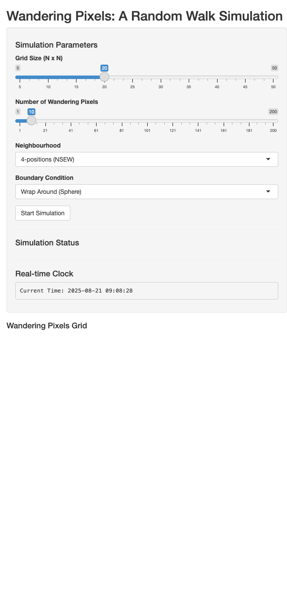

library(shiny)
library(tidyverse) # Includes dplyr, tibble, ggplot2── Attaching core tidyverse packages ──────────────────────── tidyverse 2.0.0 ──
✔ dplyr 1.1.4 ✔ readr 2.1.5
✔ forcats 1.0.0 ✔ stringr 1.5.1
✔ ggplot2 3.5.2 ✔ tibble 3.3.0
✔ lubridate 1.9.4 ✔ tidyr 1.3.1
✔ purrr 1.1.0
── Conflicts ────────────────────────────────────────── tidyverse_conflicts() ──
✖ dplyr::filter() masks stats::filter()
✖ dplyr::lag() masks stats::lag()
ℹ Use the conflicted package (<http://conflicted.r-lib.org/>) to force all conflicts to become errorslibrary(lubridate)
# library(shinyjs) # Uncomment this line and ensure shinyjs is installed if you want to use shinyjs::disable/enable in the app.
# --- Game Logic Functions ---
# Function to initialize the grid
initialize_grid <- function(n) {
# Create a tibble for the grid with x and y coordinates
grid_df <- expand_grid(x = 1:n, y = 1:n) %>%
# Initialize all pixels as 'white'
mutate(color = factor("white", levels = c("white", "black")))
# Find the center pixel(s) coordinates
center_x <- ceiling(n / 2)
center_y <- ceiling(n / 2)
# Color the center pixel(s) black
grid_df <- grid_df %>%
mutate(color = if_else(x == center_x & y == center_y, "black", as.character(color))) %>%
# Re-factor the color column after changing one to 'black'
mutate(color = factor(color, levels = c("white", "black")))
return(grid_df)
}
# Function to get valid neighbors of a pixel
get_neighbors <- function(px, py, n, neighborhood_type, wrap_around) {
neighbors_coords <- list()
# Define potential 4-position (North, South, East, West) neighbors
ns_ew <- list(c(px - 1, py), c(px + 1, py), c(px, py - 1), c(px, py + 1))
neighbors_coords <- c(neighbors_coords, ns_ew)
# If 8-positions neighborhood is selected, add diagonal neighbors
if (neighborhood_type == "8-positions") {
diagonals <- list(c(px - 1, py - 1), c(px - 1, py + 1), c(px + 1, py - 1), c(px + 1, py + 1))
neighbors_coords <- c(neighbors_coords, diagonals)
}
# Process all potential neighbor coordinates
valid_neighbors <- map_dfr(neighbors_coords, function(coords) {
nx <- coords[1]
ny <- coords[2]
if (wrap_around) {
# Apply wrap-around logic (grid lies on a sphere)
# R's %% operator can behave unexpectedly with negative numbers, so adjust:
nx_wrapped <- (nx - 1 + n) %% n + 1
ny_wrapped <- (ny - 1 + n) %% n + 1
return(tibble(nx = nx_wrapped, ny = ny_wrapped))
} else {
# If not wrapping, check if the neighbor is within grid boundaries
if (nx >= 1 && nx <= n && ny >= 1 && ny <= n) {
return(tibble(nx = nx, ny = ny))
} else {
# This neighbor is off-grid and not wrapping, so it's not a valid move
return(NULL) #
}
}
})
return(valid_neighbors)
}
# --- Shiny App UI Definition ---
ui <- fluidPage(
titlePanel("Wandering Pixels: A Random Walk Simulation"),
sidebarLayout(
sidebarPanel(
h4("Simulation Parameters"),
sliderInput("grid_size", "Grid Size (N x N)", min = 5, max = 50, value = 20, step = 1),
sliderInput("num_walkers", "Number of Wandering Pixels", min = 1, max = 200, value = 10, step = 1),
selectInput("neighborhood_type", "Neighbourhood",
choices = c("4-positions (NSEW)", "8-positions (NSEW + Diagonals)"),
selected = "4-positions (NSEW)"),
selectInput("boundary_condition", "Boundary Condition",
choices = c("Wrap Around (Sphere)", "Terminate (Off-Grid)"),
selected = "Wrap Around (Sphere)"),
actionButton("runSimulation", "Start Simulation"),
hr(), # Horizontal rule for separation
h4("Simulation Status"),
verbatimTextOutput("simStatus"),
hr(), # Horizontal rule for separation
h4("Real-time Clock"),
verbatimTextOutput("currentTime")
),
mainPanel(
h4("Wandering Pixels Grid"),
plotOutput("pixelGrid", height = "600px")
)
)
)
# --- Shiny App Server Logic ---
server <- function(input, output, session) {
# Reactive timer for the clock (updates every second)
clock_timer <- reactiveTimer(1000)
output$currentTime <- renderText({
clock_timer() # Invalidate to update every second
paste("Current Time:", format(Sys.time(), "%Y-%m-%d %H:%M:%S"))
})
# Reactive values to store simulation state and update UI
grid_data_rv <- reactiveVal(NULL) # Stores the current grid (pixel colors)
sim_status_rv <- reactiveVal("Idle. Set parameters and click 'Start Simulation'.") # Stores simulation status messages
# Observer that runs when the "Start Simulation" button is clicked
observeEvent(input$runSimulation, {
# If shinyjs is installed and loaded, uncomment these lines to disable button during simulation:
# shinyjs::disable("runSimulation")
sim_status_rv("Simulation started...")
# Parameters
n <- input$grid_size
num_walkers <- input$num_walkers
neighborhood_type <- if_else(input$neighborhood_type == "4-positions (NSEW)", "4-positions", "8-positions")
wrap_around <- input$boundary_condition == "Wrap Around (Sphere)"
# Adjust number of walkers if grid is too small
max_walkers <- floor(n * n / 2) # Maximum of N*N/2 walkers to leave some white space
if (num_walkers > max_walkers) {
num_walkers <- max_walkers
showNotification(paste0("Adjusted number of walkers to max ", max_walkers, " for grid size ", n, "x", n, "."), type = "warning")
# Optional: update the slider input programmatically for immediate UI reflection
updateSliderInput(session, "num_walkers", value = max_walkers)
}
# Initialize grid
current_grid <- initialize_grid(n)
# Initialize wandering pixels (walkers)
# Select initial positions from white pixels, ensuring they don't start on the black center
initial_white_pixels <- current_grid %>%
filter(color == "white") %>%
sample_n(min(num_walkers, nrow(.)), replace = FALSE) %>% # Sample without replacement
mutate(terminated = FALSE) # Add a status for each walker: TRUE if stopped, FALSE if still moving
# Handle case where no white pixels are available for walkers
if (nrow(initial_white_pixels) == 0 && num_walkers > 0) {
sim_status_rv("Error: No white pixels available to start walkers. Grid might be too small or already full.")
# shinyjs::enable("runComputation") # If using shinyjs
grid_data_rv(current_grid) # Display initial grid
return()
}
walkers <- initial_white_pixels %>%
select(x, y, terminated) %>%
rename(px = x, py = y) # Rename to differentiate from grid coordinates
sim_status_rv(paste0("Simulation running with ", nrow(walkers), " active walkers..."))
# --- Simulation Loop ---
step_count <- 0
max_steps <- n * n * 5 # Set a maximum number of steps to prevent infinite loops
# Loop continues as long as there are active walkers and max steps haven't been reached
while (any(!walkers$terminated) && step_count < max_steps) {
step_count <- step_count + 1
# Create a matrix representation of the current grid for faster color lookup
# Rows = y-coords, Columns = x-coords for direct [y,x] access
grid_matrix_for_lookup <- current_grid %>%
mutate(value = if_else(color == "black", 1, 0)) %>%
pivot_wider(names_from = x, values_from = value) %>% # x values become column names
arrange(y) %>% # Ensure y values are sorted to match row indexing
select(-y) %>% # Remove y column as it's now row index implicitly
as.matrix()
new_walkers <- walkers %>%
filter(!terminated) %>% # Only process active walkers
rowwise() %>% # Process each walker row independently
mutate(
original_px = px, # Store current position before potential move
original_py = py,
neighbors_info = list(get_neighbors(px, py, n, neighborhood_type, wrap_around))
) %>%
# Check if any neighboring pixel is black
mutate(
black_neighbor_found = {
if (is.null(neighbors_info) || nrow(neighbors_info) == 0) FALSE # No neighbors or empty neighbors info
else {
# Check color of neighbors on the current_grid_matrix_for_lookup
# grid_matrix_for_lookup[row=ny, col=nx]
any(map2_lgl(neighbors_info$ny, neighbors_info$nx, ~{
# Basic boundary check (should mostly be handled by get_neighbors)
if (.x >=1 && .x <= n && .y >=1 && .y <=n) {
grid_matrix_for_lookup[.x, .y] == 1 # Check if neighbor is black (value 1)
} else {
FALSE # Should not occur if get_neighbors is correct, but safe
}
}))
}
}
) %>%
ungroup() %>% # Stop row-wise operations
mutate(
# If a black neighbor is found, the walker terminates (stops moving)
terminated = if_else(black_neighbor_found, TRUE, terminated)
)
# Update the main grid for pixels where a walker terminated by finding a black neighbor
terminated_pixels_to_black <- new_walkers %>%
filter(terminated & black_neighbor_found) %>% # Find walkers that just terminated by finding black neighbor
select(x = original_px, y = original_py) # Their original position turns black
if (nrow(terminated_pixels_to_black) > 0) {
current_grid <- current_grid %>%
rows_update(terminated_pixels_to_black %>% mutate(color = factor("black", levels = c("white", "black"))), by = c("x", "y"))
}
# For walkers that have NOT terminated, decide their next move
active_walkers <- new_walkers %>%
filter(!terminated) %>%
rowwise() %>% # Process each active walker row independently
mutate(
movable_neighbors = list({
# Find neighbors that are currently white on the grid
valid_moves <- neighbors_info %>%
# Filter to ensure coordinates are valid before anti_join (redundant with get_neighbors if perfect, but safe)
filter(nx >= 1, nx <= n, ny >= 1, ny <= n) %>%
# Exclude any neighbors that are already black on the main grid
anti_join(current_grid %>% filter(color == "black"), by = c("nx" = "x", "ny" = "y"))
# If there are valid white neighbors, pick one at random
if(nrow(valid_moves) > 0) valid_moves %>% sample_n(1) else NULL
})
) %>%
ungroup()
# Update positions for movable walkers
moved_walkers <- active_walkers %>%
filter(!map_lgl(movable_neighbors, is.null)) %>% # Select walkers that found a move
mutate(
px = movable_neighbors$nx, # Update x-position
py = movable_neighbors$ny # Update y-position
) %>%
select(px, py, terminated) # Keep only necessary columns
# Walkers that couldn't move, terminate them
stuck_walkers <- active_walkers %>%
filter(map_lgl(movable_neighbors, is.null)) %>% # Select walkers that couldn't move
mutate(terminated = TRUE) %>% # Mark them as terminated
select(px, py, terminated) # Keep only necessary columns
# Recombine all walkers for the next iteration of the loop
walkers <- bind_rows(
new_walkers %>% filter(terminated & black_neighbor_found) %>% select(px = original_px, py = original_py, terminated), # Walkers that turned black
moved_walkers, # Walkers that moved
stuck_walkers # Walkers that got stuck
)
# Update simulation status message periodically to reduce overhead
if (step_count %% 10 == 0) {
sim_status_rv(paste0("Simulation running: Step ", step_count, ". Active walkers: ", sum(!walkers$terminated)))
# Allow reconnect to keep the Shiny session alive during long computations
session$allowReconnect(TRUE)
}
} # End while loop
# Final grid update (if any) and status message after loop terminates
grid_data_rv(current_grid) # Update the displayed grid to its final state
final_status <- if (any(!walkers$terminated)) {
paste0("Simulation ended at max steps (", max_steps, "). Still ", sum(!walkers$terminated), " active walkers.")
} else {
paste0("Simulation complete! All walkers terminated in ", step_count, " steps.")
}
sim_status_rv(final_status)
# If using shinyjs, re-enable the button after simulation finishes
# shinyjs::enable("runComputation")
})
# Render the pixel grid plot using ggplot2
output$pixelGrid <- renderPlot({
# Require grid_data_rv to have a value before plotting (i.e., after initialization)
req(grid_data_rv())
grid_df_plot <- grid_data_rv()
# Create the ggplot
ggplot2::ggplot(grid_df_plot, ggplot2::aes(x = x, y = y, fill = color)) +
ggplot2::geom_tile(color = "gray80", linewidth = 0.5) + # Draw square pixels with gray borders
ggplot2::scale_fill_manual(values = c("white" = "white", "black" = "black")) + # Define pixel colors
ggplot2::coord_fixed(ratio = 1) + # Ensure square aspect ratio
ggplot2::theme_void() + # Remove all default ggplot elements (axes, grid lines, etc.)
ggplot2::theme(
legend.position = "none", # Hide the legend
plot.background = ggplot2::element_rect(fill = "gray95", color = NA), # Light gray background for the plot area
panel.background = ggplot2::element_rect(fill = "gray95", color = NA), # Light gray background for the panel
plot.margin = ggplot2::unit(c(0,0,0,0), "cm") # Remove any plot margins
) +
ggplot2::scale_x_continuous(expand = c(0, 0)) + # Remove space between axis and tiles
ggplot2::scale_y_continuous(expand = c(0, 0))
})
}
# Run the Shiny app
shinyApp(ui, server)
Listening on http://127.0.0.1:5667